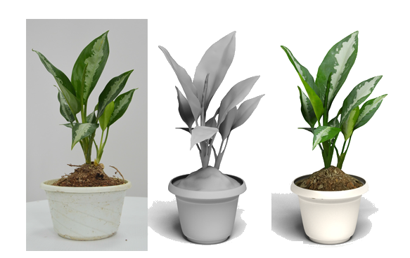
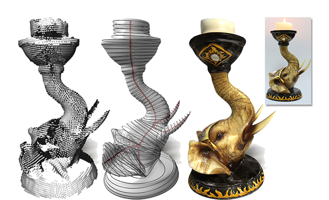

2015/8/8 One paper is conditionally accepted to SIGGRAPH ASIA 2015: "Generalized Cylinder Decomposition".
2015/8/22 I moved to SFU for my PhD training. Bye Shenzhen... ~~~~(>_<)~~~~

News:
2015/8/8 One paper is conditionally accepted to SIGGRAPH
ASIA 2015: "Generalized Cylinder Decomposition".
2015/8/22
I moved to SFU for my PhD training. Bye Shenzhen... ~~~~(>_<)~~~~
|
Kangxue Yin
Doctoral Student(1st year)
GrUVi lab, School of Computing Science, Simon
Fraser University kangxuey at sfu.ca This homepage is hosted on my GitHub: https://github.com/kangxue |
 |
|||
|
Research Interests
Capture/Synthesis/Augmentation of Visual Data, e.g. Images, Shapes, Human Poses, etc.
Sep. 2015 ~ Now, Doctoral Student in Computing Science, Simon Fraser University, Burnaby, B.C., Canada Jul. 2012 ~ Aug. 2015, Research Assistant(full-time), Visual Computing Research Center(VCC), Sep. 2008 ~ Jun. 2012, Bachelor in Software Engineering, Chang'an University, Xi'an, China Publications |
||||
Generalized Cylinder Decomposition. |
||||
|  | Full 3D Plant Reconstruction via Intrusive Acquisition. Kangxue Yin, Hui Huang, Pinxin Long, Alex Gaissinski, Minglun Gong and Andrei Sharf. Computer Graphics Forum 35(1), 2016. [paper][code + data][webpage] |
|||
|  | Morfit: Interactive Surface Reconstruction from Incomplete Point Clouds with Curve-Driven Topology and Geometry Control. Kangxue Yin, Hui Huang, Hao(Richard) Zhang, Minglun Gong, Daniel Cohen-or and Baoquan Chen. ACM Transactions on Graphics 33(6)(Special Issue of SIGGRAPH ASIA 2014 ). [paper][code + data][webpage][video] |
|||
| "Mind the Gap": Tele-Registration for
Structure-Driven Image Completion. Hui Huang, Kangxue Yin, Minglun Gong, Dani Lischinski, Daniel Cohen-Or, Uri Ascher and Baoquan Chen. ACM Transactions on Graphics 32(6)(Special Issue of SIGGRAPH ASIA 2013 ). [paper][core code + curve data][webpage] |
||||
|
---------- before 2012 ------------ |
||||
|
| ||||